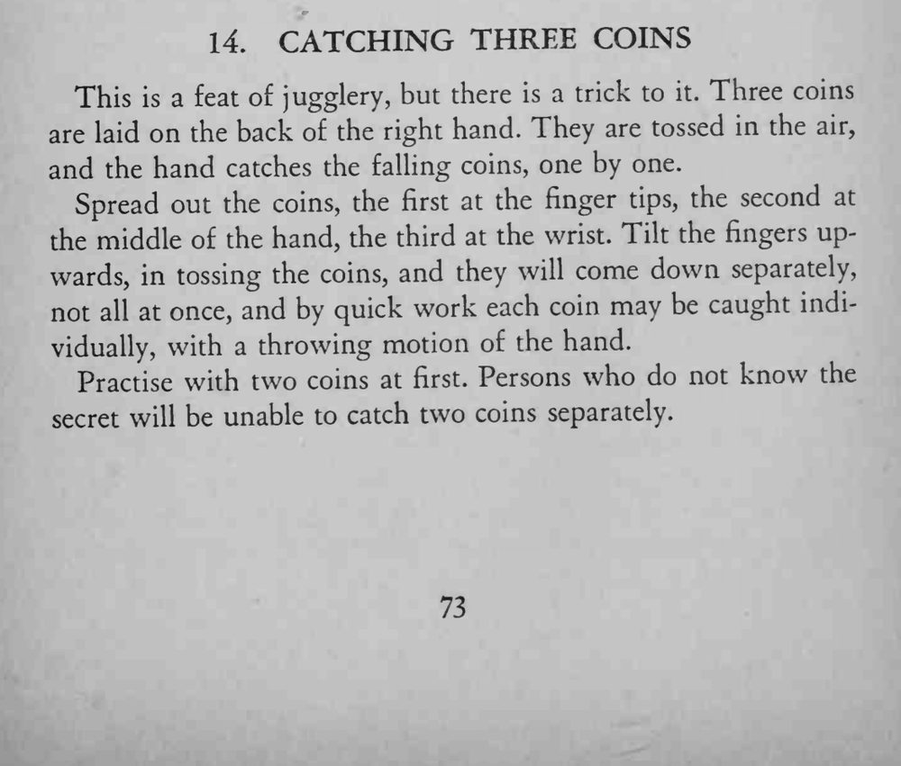

三枚硬币放在右手背上一起抛起，落下时竟被一枚一枚分别接住。
没掌握诀窍的人连两枚都无法分开接住；关键是抛币时手指上倾。

This is a feat of jugglery, but there is a trick to it. Three coins are laid on the back of the right hand. They are tossed in the air, and the hand catches the falling coins, one by one. Spread out the coins, the first at the finger tips, the second at the middle of the hand, the third at the wrist. Tilt the fingers upwards, in tossing the coins, and they will come down separately, not all at once, and by quick work each coin may be caught individually, with a throwing motion of the hand. Practise with two coins at first. Persons who do not know the secret will be unable to catch two coins separately.